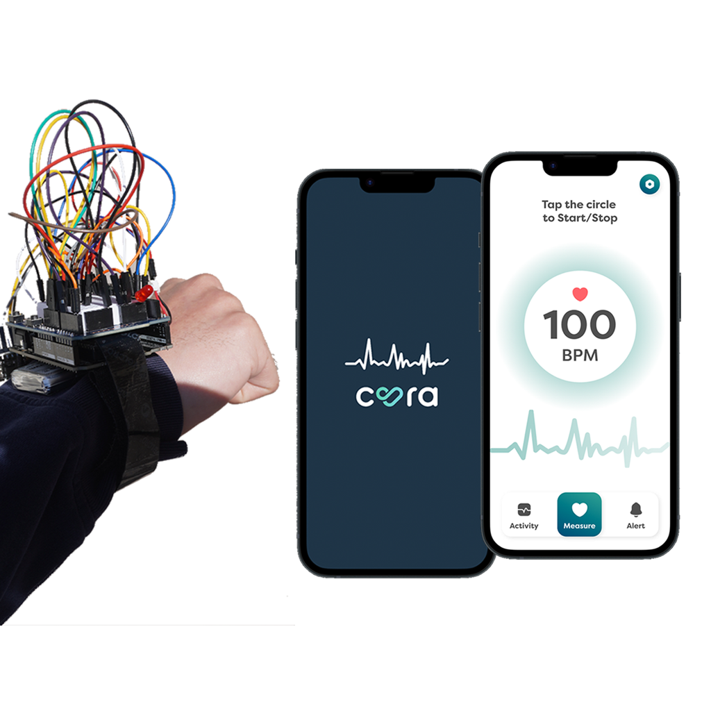
Cura
A wearable device for seniors to detect health emergency and send alerts
LA Hacks 2022 Winner
Best World Wide Wellness Hack
Best Demo
Interaction Designer
Figma
Adobe After Effect
Overview
Introduction
Cura is a health emergency alert for seniors we care for. The portable device detects the wearer’s health emergency issue and sends an SMS alert to the wearer’s emergency contact. The Cura mobile app helps track health data, view past emergency alerts, and edit emergency contacts.
Problem
Aging of the popultion has left more seniors live or go out alone. Many of them with a chronic health condition are more vulnerable to injuries. When they met health emergencies, their families might not be able to detect immediately and miss the golden hour to save their lives.
Goal
Design and develop a wearble device that detects senior's health emergencies and sends alerts to contacts, with a mobile app that keeps track of health data.
SOLUTION
Final Outcome
1. Health Emergency Detection
- Detect fall and arrhythmia
- Press an emergency button when feeling uncomfortable

2. Send SMS alert with Location
- Alert immediately sent
- No need for the emergency contacts to download app
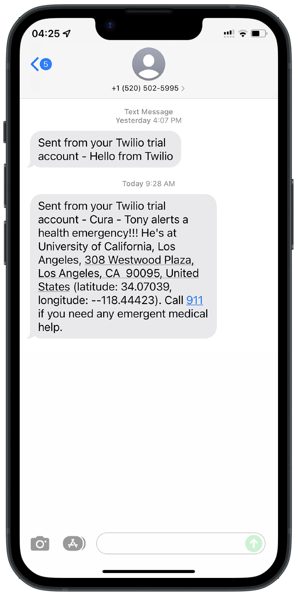
3. Track Heart Rate Data
- View and analyze the history data to prevent diseases from early state
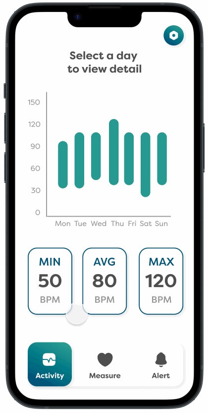
4. Accessibility for seniors
- By swiping between screens, seniors can easily change into sections without buttons
- Large text and high contrast color designed for seniors
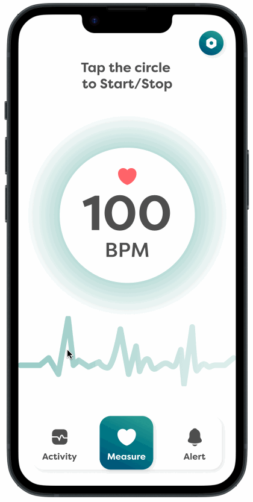
Design Research
Inspiration
Jeffery told us his experience that his grandmother once fell when taking a walk alone after dinner. His family spent a night searching for her and eventually called the police to find her. They were worried about her and did not want her to walk night walks alone.
Secondary Research
A lot of the seniors share the concerns of healthy emergency issues as Jeffery's grandmother. According to research, the two major types of emergency are falling and arrhythmia (unusual heart rate), caused by deteriorating body and organs.
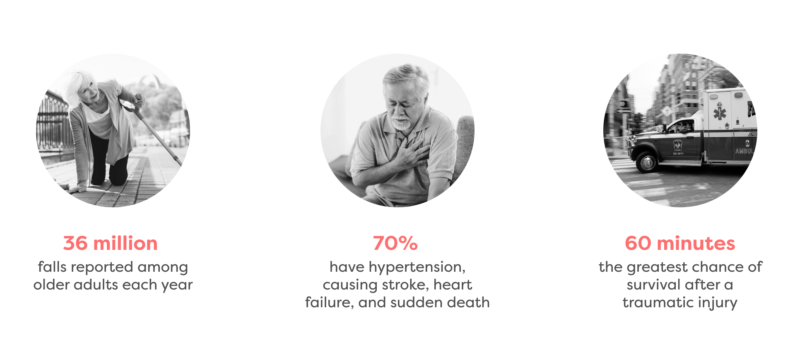
According to CDC, about 36 million falls are reported among older adults each year, resulting in 3 million emergency department treatments and more than 32,000 deaths. And according to NHANES, 70% of older adults have hypertension, causing stroke, heart failure, and even sudden death.
Moreover, a research by BMC Emergency Medicine suggests that 60 minutes after a traumatic injury is the greatest chance of survival if given medical attention. This proves our idea can be life-saving to seniors by reporting their health emergency in time, so we start building it.
Synthesize Research & Observation
Detect Health Condition
It is necessary to keep track of seniors' health data which will provide insight into their health condition. Monitoring and analyzing the data help to reduce the risk of potential injury.
Send Emergency Alert As Soon As Possible
"The Golden Hour" of survival is important especially for seniors who live alone. They require assistance of sending signals to ask for help without much effort when they meet traumatic injuries.
How might we build a wearable device that could detect the elderly wearer's health emergency and send alert to his or her family and friends?
IDEATION
Design Goal
Wearable Device
1. Able to measure the wearer's pulse and record the data
2. Easy to take on/ take off and light-weighted
Mobile App
1. Easy to use for seniors
2. Measure and keep track of the history data
3. View detailed information about emergency alerts
4. Set up emergency contacts
User Persona
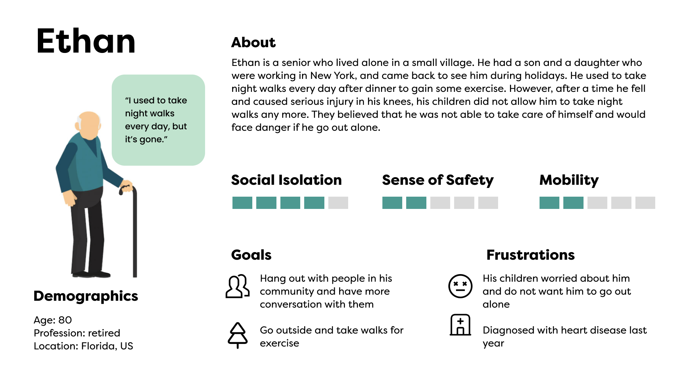
User Flow

DEsign Process
The Mobile App
Wireframes
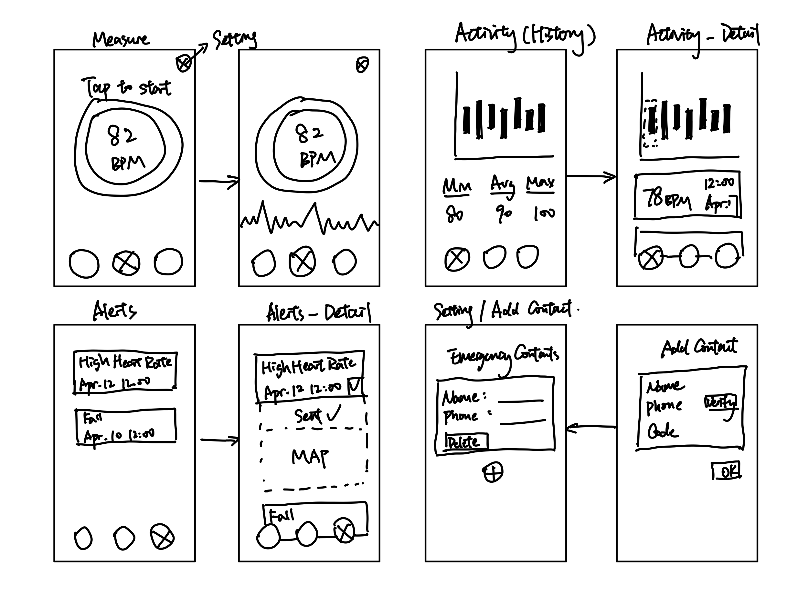
Low-Fidelity Prototype
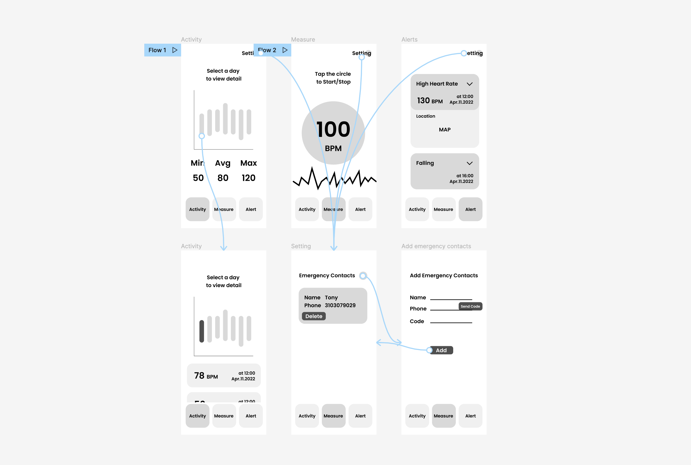
Color and Typography
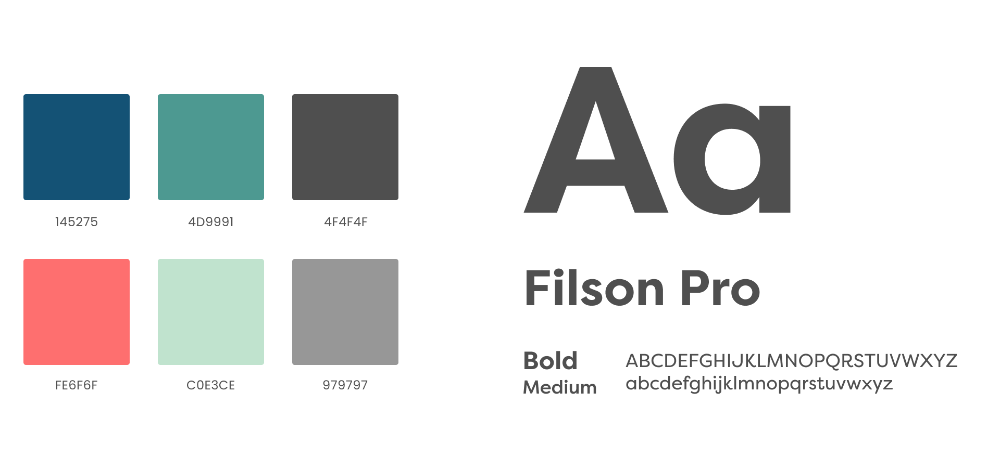
Logo Design
I chose the typography for its rounded line edges. The edges provided a feeling of safety which met our goal of caring the seniors.
The main color green is also chosen for the feelings of safety and peace it provided. Green also symbolized life, cure and treatmeat, which are the main features cura provided.
High-Fidelity Prototype
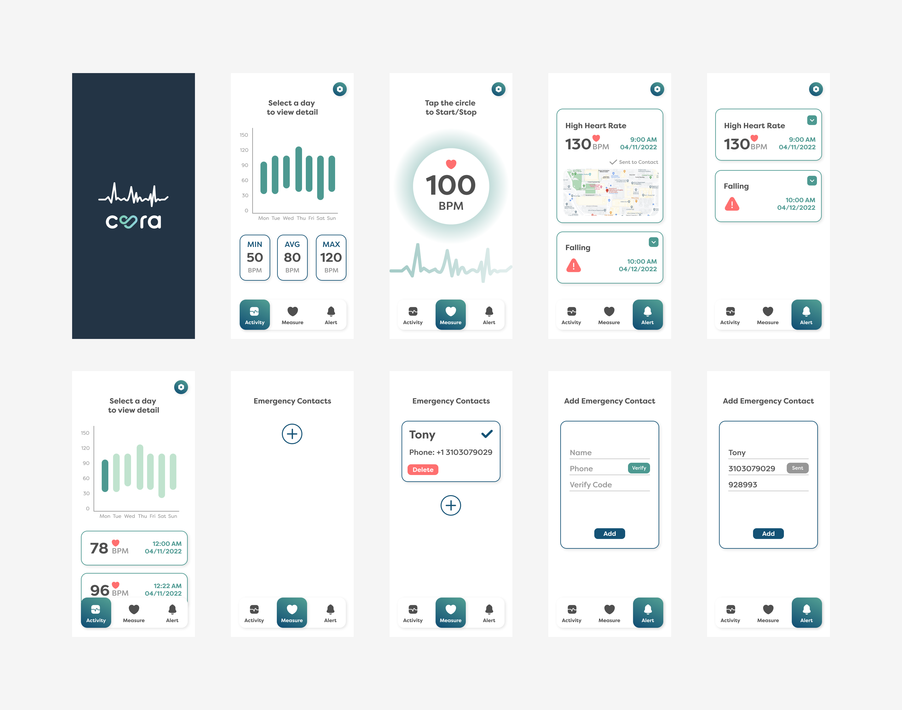
The Wearable Device
Building the Software & Hardware
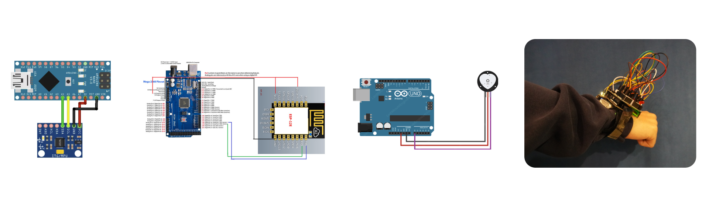
We used Arduino Uno as our main board (since Nano R3 is somehow incompatible with higher versions of MacOS, we tried), along with MPU6050 accelerometer, pulse sensor, ESP-8266 12-e WiFi modulel, pushbutton, LED bulb, and 3.7V battery.
Detect Fall
We used an accelerometer to detect fall, since fall gave us a smaller gravitational acceleration (G < 9.8 - falling threshold). We made the fall detection more accurate by identifying the accelerometer receiving a lower G when falling, a reverse spike in G when hitting the ground, and no change in G for a time period. This suggested the user had fallen and was lying still on the ground.
Detect arrhythmia
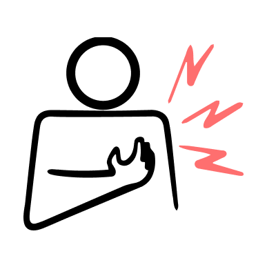
We use dthe pulse sensor to measure the wearer's heart rate. As research suggested, a heart rate higher than 200 or lower than 27 beats per minute (BPM) is life threatening. Taking into account that the wearer might be exercising or sleeping, a heart rate at this danger range was abnormal regardless of the wearer's state of movement.
Emergency Button
Since emergency casued by stroke and heart attack might not have a obvious change in heart rate, we added a emergency button that allowed the wearer to send alert directly when feeling uncomfortable. When emergency is triggered by either of the three above, the emergency LED blub turns on. The light sends signals to potential people around and tells that the wearers is in emergency.
Testing
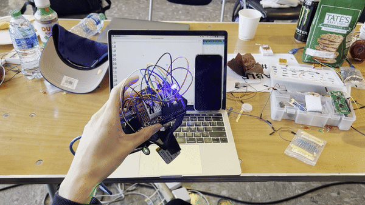
Final Design
The video explains how Cura wearable device is used under real world scenarios.
What i learned from the experience
Refection
Step Out of the Comfort Zone
Though our team was aware that making a hardware in 48 hours is challenging, we still decided to do it because we want to solve this problems and learn new things.
We had a clear division of work that each of our team was working on a part that we were good at. When we met challenges, we always supported each other by providing views from different perspectives. Whereas my teammates focused on the technical part of the device, I worked more on the visual and usability aspect to make our device easy-to-use and tell a good story.